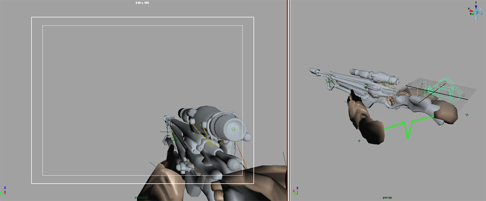
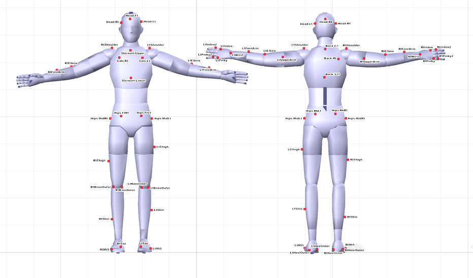
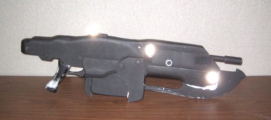
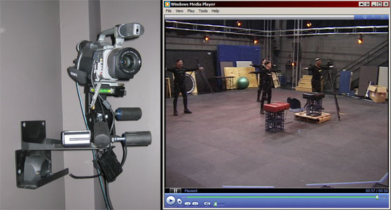
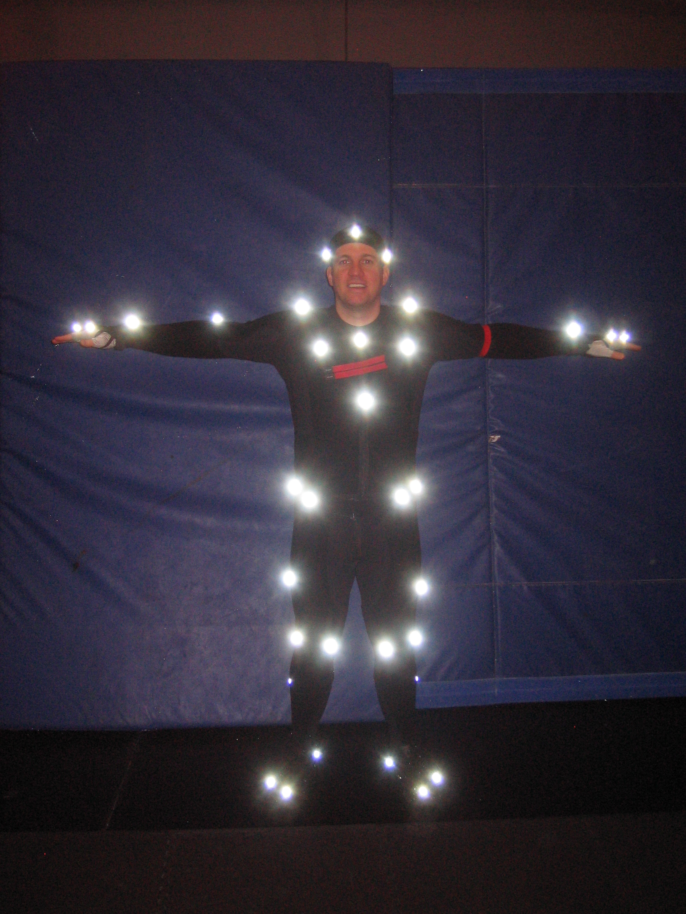

UDN
Search public documentation:
CreatingAnimationsCH
English Translation
日本語訳
한국어
Interested in the Unreal Engine?
Visit the Unreal Technology site.
Looking for jobs and company info?
Check out the Epic games site.
Questions about support via UDN?
Contact the UDN Staff
日本語訳
한국어
Interested in the Unreal Engine?
Visit the Unreal Technology site.
Looking for jobs and company info?
Check out the Epic games site.
Questions about support via UDN?
Contact the UDN Staff
为虚幻引擎创建动画
概述
本文将介绍虚幻引擎内容传递流程的动画创建过程中所使用的不同类型美术资源相关的基本知识。
开发工具
现代的3D内容创建包（比如3DMax和Maya）支持FBX。虚幻引擎3内部支持FBX导入及导出。
角色
角色设置和骨架绑定
角色模型应该以非常中立的姿势创建，通常是“T-姿势”，但是使关节处于放松自然的形式也是可以的。骨骼结构应该是单一的骨骼层次、模仿人类的骨架、使角色网格物体处于合适的姿势，并且以放置在原点的“root(根骨骼)”为父项。 尽管编辑器可以导入使用Y轴正方向创建的骨架网格物体，但我们更加希望在所有3D包中使用Z轴正方向进行工作。这样可以保证事情在所有3D包中都一致，并且允许我们在Max和Maya间转换网格物体，不会出现任何坐标轴问题。 当使用Z轴正方向为标准时，角色的建模和骨架绑定在Max中应该面向+Y，或者在Maya中面向-Ｙ。(这个坐标轴在这两个包中是反转的)。在编辑器中，我们对角色应用旋转偏移，使得它们在编辑器中面向+X轴。 对于像布料、装甲或毛发这样的局部，骨架也可以包含额外的带权重的骨骼；同时骨架也可以包含用作为附加点的骨骼，比如武器骨骼或IK骨骼。
最好保持您的角色动画绑定完全地和骨架层次分离开。当导出时，在骨架层次中添加定位器和节点可能会引起一些问题。
如果对多个角色进行建模及并它们的分割部分均衡地适应同一个骨架，那么这些角色可以共享动画集，从而可以减少所需动画的数量。尽管角色的分割部分稍微有点不同通常也可以共享动画。
技术注意事项 :
对于像布料、装甲或毛发这样的局部，骨架也可以包含额外的带权重的骨骼；同时骨架也可以包含用作为附加点的骨骼，比如武器骨骼或IK骨骼。
最好保持您的角色动画绑定完全地和骨架层次分离开。当导出时，在骨架层次中添加定位器和节点可能会引起一些问题。
如果对多个角色进行建模及并它们的分割部分均衡地适应同一个骨架，那么这些角色可以共享动画集，从而可以减少所需动画的数量。尽管角色的分割部分稍微有点不同通常也可以共享动画。
技术注意事项 : - 在一个骨架中网格物体影响可以影响的骨骼的最大数量为 75 。
- 在一个骨架中的总骨骼数的最大值为 256 。
- 对于网格物体，每个顶点的骨骼影响点的最大数量为 4 。(当导入时，任何顶点，如果受到超过4个骨骼的影响，那么将会把它的最低影响点删除，并且在那个顶点的剩余4个影响点之间进行单位化处理)。注意，这会产生基于您为某特定LOD所使用的最大值的性能消耗。所以您如果您想使用值不超过3，那么速度将会较快。一般我们仅为LOD1使用1或小于1的值。

骨骼层次
具有和骨盆分离的根骨骼是很重要的。根骨骼放在哪里都是没有关系的，尽管放在某些地方可能会使事情变得稍微有点复杂。我们发现当根骨骼在脚部和原点时，可以确保动画一起工作得很好。如果根骨骼在空中的某个地方，当动画不能进行正确地 链接/混合 并产生明显的凸起时，它是很难检测到它了。比如，在Marcus爬上某物的地方执行根骨骼运动动画，那么应该把根骨骼放置在哪里便是显而易见的，因为它应该放置在它的脚部即将接触地面的地方。 对于IK，我们把IK骨骼用于脚部和手部，根骨骼的直接子节点。这样便去除了当和具有很长骨骼层次的动画相混合时产生的 位置/旋转 错误。 根据所涉及的动画不同，层次中的武器骨骼的位置通常有正面的和反面的。大多数时候我们的角色都持着枪，所以把它们设为手的子节点是有意义的，因为不管我们压缩动画的程度是多么严重或者我们的动画是在多么低的帧频率下播放，枪支都会在手中保持固定的姿势。这样做的缺点是，当骨骼必须离开手部时的情形。在某些重新装载弹药过程中或者当给枪支安装皮套过程中，骨骼之间或许会发生很多变动，需要在较高的帧频率下才能看到，否则它不能被注意到。因为这些动画类型在我们实例中是很少的，所以我们认为把它们用作为手部的子节点将会为我们节约很多内存。如果我们有很多格斗武器并且它们在持续地到处旋转或怎样，我们可以把这个武器骨骼放置在较高的层次，甚至作为根骨骼的子节点。 武器末端的骨骼(weapon end bones)是一个附加骨骼，它可以把枪的支点改为中心位置的一种方法，在不没有改变所有动画中武器骨骼位置并重新导出它们的情况下，仍然可以使所有动画正确地显示。对于动画有一些较小的骨架绑定优势，但是最好不要使用它们。当我们完成镜像动画是如何工作但没有很多时间来实现它时，这个改变就必须发生。这对于简化脚步的滑行是很重要的。当您将两个以上的动画和很长的骨骼层次相混合时，将会产生错误；脚部的IK是确保脚部在正确位置的一种方式。这在定向混合中是非常明显的。对于非常大的创建物，我们确实要保持它，比如在战争机器 (PC)中的Brumak的战争。 胳膊肘骨骼 -上臂骨骼的直接子节点 – 仅用于调整上臂骨格的一半数量来帮助顶点进行更好的变形。在游戏中，这样比把roll bones(旋转骨骼)直接放置到层次中的手臂下会获得更好的效果，所以按照这种方式我们仍然可以使具有关节连接的两段手臂和IK一起协同工作。
角色导出
一旦在您的3D包中将角色网格物体绑定到骨架上并进行了适当的权重设置，那么便可以将其导出为大部分3D内容创建包都支持的FBX文件。如果在场景中有您不想导出的额外骨骼或者带权重网格物体，您必须从场景中将其移除，或者(仅在Maya中)您可以使用后缀 _noexport 来单独地重命名那些骨骼，或者使用后缀 _ignore 重命名最高层次的骨骼。--> 请参照 FBX骨架网格物体导出页面获得更多信息。角色导入和设置
请参照 FBX骨架网格物体导入页面获得更多信息。武器
第一人称武器设置和骨架绑定
第一人称武器是您在游戏中看到的您自己持有的武器。因为它们放置的位置离玩家的视野很近，并且大多数时候都在其视野中，所以模型一般都具有较高数量的多边形，且它们上应用的贴图都具有较高的分辨率。 技巧: 由于第一人称武器一般仅能从一侧看到，通过删除玩家永远看不到的任何多边形或者物体(通常在模型的前侧/右侧)，可以对模型进行优化。仅当最终的动画完成时才对模型进行优化处理，那时您便知道哪个部分是永远不会被看到的。 在您的3D包中，在原点放置一个照相机，并把它的方向沿着+X轴对齐。这将会代表在游戏中玩家的视野。把第一人称武器网格物体放置到这个相机视野的前面，这样便可以在游戏中看到它。调整相机的FOV及网格物体的位置来获得理想的效果。 技术注意事项 : 第一人称游戏是使用不同的渲染遍数进行显示的，所以可以进行视角偏移和FOV改变，且它仅影响第一人称物体而不会影响整个场景的视图。可以编程人员协作来为第一人称的相关条目来调整FOV、视角偏移以及剪切板。 当设计第一人称武器时第一个需要确定的事情是您是否能够看到您自己的手臂。使第一人称手臂可以在视野中显示将会增加设计的复杂度级别。此外，使每个武器可以具有多种类型的手臂(男人、女人、机器人、生物等等)，也将会再次增加复杂度级别。
1) 仅第一人称武器，没有第一人称手臂。 这是复杂度最低的选项，仅需要武器的骨架绑定和动画。武器应该和一个骨架层次进行绑定。这个骨架结构应该以在起始位置的“root (根)”骨骼为父项。从相机所在的原点处开始使武器进行动画。一旦动画完成，便可以将骨架网格物体和动画导出为单独的FBX文件。 2)第一人称武器和第一人称手臂，但只有一种类型的手臂。 如果所有的角色都有同样的手臂，您仅需要一个第一人称手臂模型，手臂和武器可以是一个单一的骨架的一部分。这个单一的骨架应该以在起始位“root(根骨骼)”为父项。从相机所在的原点处开始使武器进行动画。一旦动画完成，可以将武器网格物体导出为一个单独的FBX文件，并将动画导出为单独的FBX文件。 3) 第一人称武器和多种不同的第一人称手臂。 如果角色差异很大，那么您需要多个第一人称手臂网格物体来和每个武器进行协作，您需要两个单独的骨架，一个是武器的，一个是手臂的。每个骨架需要以场景原点的”root(根骨骼)”为父项。从建模的立场来说，所有手臂网格物体应该以同样的姿势、使用同样的分割部分、并且绑定到同样的骨架上来进行建模。您需要把不同的手臂网格物体导出到单独的FBX 文件中，并且把每个武器网格物体单独地导出到FBX 文件中；然后把它们导入到虚幻编辑器。这些单独的手臂骨架网格物体将可以共享同一个动画集。 一旦您已经在您的3D包中使武器和手臂一起产生了动画，可以把动画烘焙出来并移除它们之间的约束。保存这个文件并把它重命名为” ExportReady”版本，这时您便有了一个具有两个骨架的版本。删除手臂骨架并导出武器动画到PSA文件。重新打开具有两个骨架的” ExportReady”文件。现在删除武器网格物体并使用同样的动画名称和帧范围来导出手臂动画到另一个FBX 文件中。把每个FBX 文件导入到它们自己的动画集中。最终您会拥有一个手臂动画集和每个武器的一个武器动画集。 在游戏中，武器骨架网格物体和手臂骨架网格物体将会被再次放回到一起，并播放同步后的动画，然后任何手臂骨架网格物体将可以从任何手臂动画集中播放动画。
在引擎中调整
最好和程序员进行合作，来使游戏中的第一人称武器和手臂在正确的相机FOV下、正确地加载不同的手臂网格物体、并且使武器和手臂的动画保持同步的情况下进行运作。因为动画是基于场景的原点的，所以不需要任何偏移来时来使它们处于视角中。如果它们需要稍微地进行调整，您可以或者给网格物体应用偏移、或者程序员通过代码进行偏移。第三人称武器设置和骨架绑定
第三人称武器是您看到的其它角色持有的武器。为了建立第三人称武器模型，首先应该把它和它自己的较小的骨骼层次相绑定，然后作为骨架网格物体导出。应该放置武器的”根骨骼”，以便当它被约束到角色的”武器”的骨骼时，武器可以恰当地排列在角色的手中。 在您的3D包中，当武器的”根骨骼”被约束到角色”武器”的骨骼时，角色和武器便可以一起在同一个场景中产生动画。您最终可以导出两个独立的但同步的动画。一个是武器的一个是角色的。 为了是武器和角色一同产生动画，比如重新装载弹药的动画，把已经进行骨架绑定的角色和武器放入到同一个场景中，并且把武器的”根骨骼”先约束到角色的”武器”骨骼上。您最终可以导出武器和角色的动画，它们是两个独立的动画但它们之间却是同步的。
通过使用约束来保持手部锁定到武器部分或者以相反的方式，可以使角色和武器按照您希望的方式进行动画。一旦 角色-加-武器 的动画准备好，便可以把动画烘焙到两个骨架层次上，并且可以删除它们之间的所有约束。仅从武器的”根骨骼”删除所有的关键帧，并设置它的位置和旋转值为<0,0,0>。这将会保持所有带动画武器上的动画，但是保持武器在场景的零点处。保存这个文件但是把为“ExportReady(准备导出)”版本。
为了是武器和角色一同产生动画，比如重新装载弹药的动画，把已经进行骨架绑定的角色和武器放入到同一个场景中，并且把武器的”根骨骼”先约束到角色的”武器”骨骼上。您最终可以导出武器和角色的动画，它们是两个独立的动画但它们之间却是同步的。
通过使用约束来保持手部锁定到武器部分或者以相反的方式，可以使角色和武器按照您希望的方式进行动画。一旦 角色-加-武器 的动画准备好，便可以把动画烘焙到两个骨架层次上，并且可以删除它们之间的所有约束。仅从武器的”根骨骼”删除所有的关键帧，并设置它的位置和旋转值为<0,0,0>。这将会保持所有带动画武器上的动画，但是保持武器在场景的零点处。保存这个文件但是把为“ExportReady(准备导出)”版本。
武器导出
打开您的包含武器和角色的烘焙动画的"Export Ready"文件。从场景中删除角色骨架和网格物体，然后导出武器动画为一个FBX文件。重新打开具有两个骨架的“ExportReady”文件，这次删除武器的骨架和网格物体。使用同样的动画名称和帧范围导出角色动画，但是导入另一个 FBX文件中。武器导入
在虚幻引擎中，导入角色的FBX 文件到角色的动画集中，并导入武器的PSA文件到武器的动画集中。在引擎中调整
和编程人员协作，使得在游戏播放时把武器的骨架网格物体约束到角色的”武器”骨骼上。这可能需要在角色的”武器”上创建一个插槽。当动画在角色和武器上同时播放时，它们应该是同步的。顶点变形目标
顶点变形目标设置
顶点变形目标 (也称为Blend Shapes(混合形状))用于改变一个网格物体的形状，或者网格物体的某一部分，它通过使一组顶点发生偏移来实现。当骨骼变形不能满足需求时，顶点变形可以作为一种很好的可替换方式。顶点变形目标可以有很多应用，包括脸部动画、肌肉仿真甚至车辆毁坏。顶点变形目标导出
为了虚幻编辑器中进行应用，顶点变形目标可以和骨架网格物体一同导出到一个单独的FBX文件中，然后将其再一次性地导入到虚幻编辑器中进行应用。或者，如果您愿意，也可以分别地导出它们，然后再分别地导入它们。请参照 FBX导入顶点变形目标页面获得更多信息。 顶点变形注意事项: 所有的顶点变形的导出网格物体和导入网格物体必须是同一个，从而可以确保顶点顺序仍然是一样的。导入一个顶点变形到一个具有不同顶点顺序网格物体上时在大多数情况下都会引起一些问题。请确保当导出每个顶点变形时不要移动网格物体或者改变骨架绑定姿势。重新导入源网格物体可能也会导致顶点顺序问题，并且可能需要重新导入顶点变形目标。在编辑器中进行顶点变形目标的导入及设置
请参照 FBX导入顶点变形目标页面获得更多信息。 技术注意事项: 当导入一个新的顶点变形时，编辑器将会按照顶点顺序在导入的PSK和源网格物体之间比较顶点，将会找出位置变化的顶点，并仅保存移动的顶点的数据。 为了把定点变形目标连接到骨架网格物体上，打开您的网格物体的动画树。这将会打开动画集编辑器。在动画树编辑器中选择动画树节点。 您首先需要把动画树连接到您创建的MorphTartetSet(顶点变形目标集)上。在Properties(属性)部分，展开"Preview Mesh List(预览网格物体列表)"属性。然后在Preview Morph Sets(预览顶点变形集合)中添加一项。展开"Preview Morph Sets(预览顶点变形集合)"列表。
您首先需要把动画树连接到您创建的MorphTartetSet(顶点变形目标集)上。在Properties(属性)部分，展开"Preview Mesh List(预览网格物体列表)"属性。然后在Preview Morph Sets(预览顶点变形集合)中添加一项。展开"Preview Morph Sets(预览顶点变形集合)"列表。
 打开动画集编辑器窗口，返回的内容浏览器，并选择您的MorphTargetSet(顶点变形目标集)。然后再次返回到这个动画树编辑器窗口，点击绿色的箭头来把那个顶点变形集添加到Preview Morph Set(预览顶点变形集合)列表中。
打开动画集编辑器窗口，返回的内容浏览器，并选择您的MorphTargetSet(顶点变形目标集)。然后再次返回到这个动画树编辑器窗口，点击绿色的箭头来把那个顶点变形集添加到Preview Morph Set(预览顶点变形集合)列表中。
 现在您必须把独立的顶点变形连接到动画树上。右击动画树编辑器窗口的空白区域来显示一系列的节点。选择"MorphNodeWeight(顶点变形节点权重)"来创建那个节点。再次右击空白区域，然后选择"MorphPose(顶点变形姿势)"来创建那个节点。按照下图所显示的来链接顶点变形节点和动画树。
现在您必须把独立的顶点变形连接到动画树上。右击动画树编辑器窗口的空白区域来显示一系列的节点。选择"MorphNodeWeight(顶点变形节点权重)"来创建那个节点。再次右击空白区域，然后选择"MorphPose(顶点变形姿势)"来创建那个节点。按照下图所显示的来链接顶点变形节点和动画树。
 在属性部分，选择MorphPose节点，在您的MorphTargetSet中输入一个现有的顶点变形的名称。您现在应该可以拖动在MorphNodeWeight节点下面的数值滑条了，从而在3D窗口中看到定点变形的混合入和混合出效果。重命名MorphNodeWeight节点。MorphNodeWeight节点的名称将会被Matinee或者编程人员使用，从而可以把它应用到游戏中的定点变形上。
为了快速地复制这个树，并且像这个动画树中添加更多的顶点变形，可以同时选中MorphNodeWeight 节点和MorphPose节点，并按下ctrl+w键来复制节点及其链接。在新的MorphPose节点中改变顶点变形的名称，并且重命名MorphNodeWeight节点。
在属性部分，选择MorphPose节点，在您的MorphTargetSet中输入一个现有的顶点变形的名称。您现在应该可以拖动在MorphNodeWeight节点下面的数值滑条了，从而在3D窗口中看到定点变形的混合入和混合出效果。重命名MorphNodeWeight节点。MorphNodeWeight节点的名称将会被Matinee或者编程人员使用，从而可以把它应用到游戏中的定点变形上。
为了快速地复制这个树，并且像这个动画树中添加更多的顶点变形，可以同时选中MorphNodeWeight 节点和MorphPose节点，并按下ctrl+w键来复制节点及其链接。在新的MorphPose节点中改变顶点变形的名称，并且重命名MorphNodeWeight节点。
面部
关于设置FaceFX的更多信息，请参照Face FX简介页面。
车辆
关于设立及其绑定车辆的相关信息，请参照设立车辆页面。
照相机
关于设立及绑定相机的信息，请参照设立相机页面。
编辑器工具
在编辑器中进行内容导入及设置
请参照FBX骨架网格物体导入页面获得关于将骨架网格物体导入到虚幻引擎3中的更多信息。要想查看及编辑该网格物体，请在内容浏览器中双击它即可。这将会打开动画集编辑器窗口。这个窗口用于修改动画集、骨架网格物体和顶点变形目标。动画集编辑器
请查看动画集编辑器用户指南页面来获得更多信息。动画树编辑器
请查看动画树编辑器用户指南来获得更多信息
PhAT
请查看物理编辑器用户指南来获得更多信息。
运动捕捉
这个部分将讨论Epic的独特的运动捕捉工具及使用方法。但请记住，在市场上有很多种类型的运动捕捉系统。每种类型都有它的优缺点。请使用最适合您的系统。无论您使用哪个运动捕捉系统或方法，为了把最终的动画导入到虚幻编辑器中，您都必须使用ActorX导出器把这些动画从类似于Max、Maya 或 Softimage的3D包中导出。 我们使用 Vicon MX系统。这是一个” Passive Optical(无源)”系统，它跟踪通过Velcro附加到actor上的反射标志。我们的系统安排了36个照相机非常均匀地分配在整个房间内。同时我们也记录同步的参考视频。 我们的运动捕捉方法如下:
- 校准系统。
- 捕捉运动。
- 使用Vicon IQ 或 Blade来清除标志数据。
- 在Motionbuilder中把动作放置到目标角色上。
- 在Max或Maya中修改动画使其更加完美。
- 使用ActorX把它导入到虚幻编辑器中。

我们也在武器和小道具上放置标志 – 尝试在每个需要跟踪的武器或者物体上放置4或5个标记。您真正需要的仅是3个标记，但为了防止遮挡，多添加一个或者两个标记是有帮助的。这样也会使得您在清除或者标记数据时更加容易地决定物体的前面。
当在Vicon IQ中清除及标注了标记数据后，我们将把那个带标签的标志数据和一个完全进行了骨架绑定的角色导入到一个Motionbuilder场景中，然后把那个动作放置到角色上。一旦已经对Motionbuilder的“Character(角色)”和“Actor”选项进行调整来创建想要的运动和姿势，我们规划动画(也称为”烘焙”)动画或者到角色骨架或者到Motionbuilder角色绑定装置。这时，我们可以进一步在Motionbuilder中是动画变得简洁、调整时间或设置循环。 然后我们把Motionbuilder中的动画导入到Max Biped 或者Maya中，来最终的对动画进行修饰。 一旦动画达到我们希望的效果，我们可以使用AcotorX把那个动画从Max或Maya中导出，然后再将其导入到虚幻编辑器中。 技巧: 我们使用在房间的角落安装的可携式摄像机。我们设立的系统是为了那个可携式摄像机中捕获视频，并使它和数据保持同步。请确保可携式摄像机由足够宽的镜头来覆盖所有的捕获空间。
技巧: 如果所有的任务都呆在捕获体积内，且如果它们每个开始和结束表现都为T-姿势，那么清理数据是很容易的。我们使actor查处我们的捕获空间的仅当他正在疾跑时。一旦一个actor离开了捕获空间，那么它应该一致呆在外面，并且在场景结束时不返回到T-姿势。 技巧: 我们将把一些带颜色的Velcro彩带附加到actor上，以便我们可以用一种简单的方法在参考视频中辨别不同的actors。